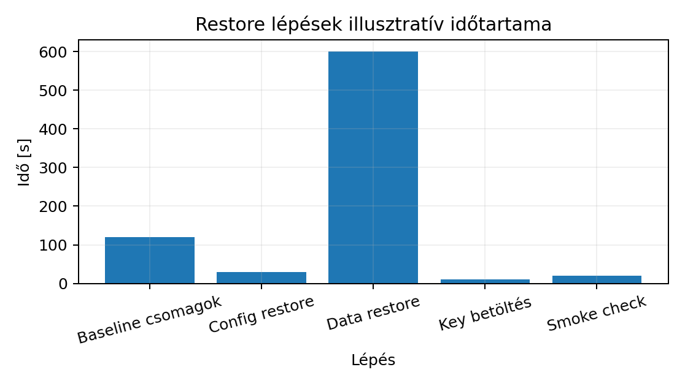

A d096–d099 fejezetekben a backupstratégia, a restic repository
életciklusa és a konzisztens adatmentés felépült. A backup azonban csak
akkor tekinthető működőnek, ha egy új, üres VM-re kizárólag a manifest
és a repository alapján vissza tudjuk állítani a szolgáltatást, és a
helyreállított rendszer adat- és funkcionális invariánsait igazolni
tudjuk. Ez a labor ezt a bizonyítást végzi el: a labapp
nevű C++ szolgáltatást és a hozzá tartozó PostgreSQL adatbázist új VM-re
állítjuk vissza, mérjük a recovery time objective-öt (RTO) és a recovery
point objective-öt (RPO), majd elvégezzük a failbacket és a lab
cleanupot.
A restore (helyreállítás) az a folyamat, amely során egy biztonsági másolatból új üzemeltetési példányt hozunk létre, és a szolgáltatást ismét használatra kész állapotba helyezzük. A restore addig nem bizonyított, amíg az alkalmazás smoke tesztje, az adatintegritás-ellenőrzés és a várt viselkedés nem teljesül.
Recovery Point Objective (RPO): a megengedett (cél) legnagyobb adatvesztési ablak. Egy konkrét incidensben az elért adatvesztési ablak:
ahol a katasztrófa időbélyege, pedig az utolsó sikeres, ellenőrzött biztonsági mentés időpontja. A cél teljesül, ha . A mértékegység másodperc, perc vagy óra, a szolgáltatás üzleti igényétől függően.
Recovery Time Objective (RTO): a megengedett (cél) legnagyobb helyreállítási idő. Egy konkrét incidensben az elért helyreállítási idő:
ahol az az időpont, amikor a smoke teszt sikeresen lefut az új példányon. A cél teljesül, ha .
Az RPO/RTO tehát célérték (objective); a laborban a
és
mért ablakot hasonlítjuk hozzá. Mérés előtt mindkét hoston
timedatectl show -p NTPSynchronized értéke yes
legyen, és az időbélyegek UTC-ben kerülnek a jegyzőkönyvbe.
A restore sorrendje nem a manifest listázási sorrendjét követi, hanem a dependenciákat. Általános ajánlott sorrend:
0600 móddal élhet
(vagy systemd credentialként a $CREDENTIALS_DIRECTORY
alatt); a forrása a vault, nem a backup.A Damaged repository fixture egy olyan szándékosan sérült restic repository, amelyből egy vagy több blob hiányzik. Ez a helyreállítási próbát meghiúsíthatja, és a másodlagos repository-copy használatát kényszeríti ki.
A Hiányzó kulcs fixture a restic repository
titkosítási jelszavának elvesztését szimulálja. A restic
check vagy restore ilyenkor kéri a
repository password értékét, és a pontos kulcs nélkül a
restore meg sem kezdhető.
A labor topológiája:
| Host | Szerep | IP cím | Diszk | Megjegyzés |
|---|---|---|---|---|
labhost01 |
forrás, ahol a labapp és PostgreSQL fut |
192.0.2.10 | lab-disk01 |
a katasztrófa helyszíne |
labrestore02 |
új, üres VM a restore célállomáshoz | 192.0.2.20 | lab-disk02 |
baseline telepítés után |
labnfs |
restic repository tároló | 192.0.2.30 | lab-backup-disk |
primary és replica repository is elérhető NFS-en |
A manifest JSON formátumú, és a source oldalon jön létre, mielőtt a katasztrófa bekövetkezik:
{
"service": "labapp",
"manifest_version": "1",
"created_at": "2025-01-15T10:00:00Z",
"packages": [
"postgresql=16.1",
"liblabapp1=2.0.3",
"curl=8.5.0"
],
"config_files": [
"/etc/labapp/labapp.yaml",
"/etc/postgresql/16/main/pg_hba.conf"
],
"data_paths": [
"/var/lib/labapp/data/",
"/tmp/labapp.dump",
"/tmp/labapp-globals.sql"
],
"secret_ref": "labapp-tls-key-v1",
"backup_repo": "/mnt/labnfs/labapp-repo",
"backup_repo_replica": "/mnt/labnfs/labapp-repo-replica",
"backup_snapshot_id": "<a restic snapshots kimenetéből az ID>"
}A secret_ref nem a titkos kulcs értékét, hanem a secrets
managerben tárolt bejegyzés azonosítóját tartalmazza. A
backup_repo ugyanaz az NFS-útvonal, amelyet a labor minden
restic-parancsa használ; a backup_snapshot_id a backup után
konkrét azonosítót kap (nem latest), így a restore
reprodukálható. Az adatbázis nem a nyers data-könyvtárból, hanem a
pg_dump fájlból és a globális objektumok dumpjából áll
vissza.
A forrás labhost01-en a PostgreSQL adatbázist
konzisztens pg_dump fájlba mentjük, a szerepköröket
(globális objektumokat, amelyeket a pg_dump nem ment)
pg_dumpall --globals-only-val, majd a restic repositoryba
toljuk. A restic rootként fut, mert a
/etc/postgresql/16/main fájljai
postgres:postgres 0640 jogúak; a jelszó a root által
olvasható /root/.lab-restic.pass fájlból jön:
# labhost01, UID=0, root
export RESTIC_PASSWORD_FILE=/root/.lab-restic.pass
sudo -u postgres pg_dump -Fc -f /tmp/labapp.dump labapp
sudo -u postgres pg_dumpall --globals-only > /tmp/labapp-globals.sql
restic -r /mnt/labnfs/labapp-repo backup /tmp/labapp.dump \
/tmp/labapp-globals.sql /var/lib/labapp/data /etc/labapp \
/etc/postgresql/16/main
restic -r /mnt/labnfs/labapp-repo snapshotsA snapshot-ID-t a manifest backup_snapshot_id mezőjébe
írjuk. A backup után ellenőrizzük a repositoryt, majd létrehozzuk a
replica repositoryt azonos chunker-paraméterekkel, és átmásoljuk bele a
snapshotokat:
# labhost01, UID=0, root
restic -r /mnt/labnfs/labapp-repo check
restic -r /mnt/labnfs/labapp-repo-replica init \
--from-repo /mnt/labnfs/labapp-repo --copy-chunker-params \
--from-password-file /root/.lab-restic.pass
restic -r /mnt/labnfs/labapp-repo-replica copy \
--from-repo /mnt/labnfs/labapp-repo \
--from-password-file /root/.lab-restic.passVárható kimenet: a check hiba nélkül fut, és
no errors were found sorral zárul; a replica
snapshots listája ugyanazzal az időponttal és útvonalakkal
mutatja a másolt snapshotot (az ID eltérhet a primary repositoryétól,
ezért a replicából történő restore-hoz a replica saját ID-jét kell
kiolvasni).
A labrestore02 VM-re Ubuntu Server 24.04 LTS települ,
majd elvégezzük az alap konfigurációt:
# labrestore02, UID=0, root (labkonzolról, mert a hálózat még nincs kész)
hostnamectl set-hostname labrestore02
cat > /etc/netplan/60-lab.yaml <<'EOF'
network:
version: 2
ethernets:
enp1s0:
addresses: [192.0.2.20/24]
routes:
- to: default
via: 192.0.2.1
EOF
chmod 600 /etc/netplan/60-lab.yaml
netplan apply
apt-get update
apt-get -y install ubuntu-standard restic nfs-common
mkdir -p /mnt/labnfs
mount -t nfs4 192.0.2.30:/srv/labnfs /mnt/labnfs
# a restic-jelszó a vaultból (dummy), atomikusan 0600 móddal:
vault kv get -field=password secret/labapp-restic-key \
| install -m 600 /dev/stdin /root/.lab-restic.pass
export RESTIC_PASSWORD_FILE=/root/.lab-restic.pass
restic -r /mnt/labnfs/labapp-repo snapshotsVárható postcondition: a host elérhető SSH-n, a
192.0.2.20 reboot után is pingelhető a lab hálózatból (a
Netplan-fájl perzisztens), a labrestore02 név feloldódik, a
/mnt/labnfs fel van csatolva, és a
restic snapshots jelszókérés nélkül listázza a manifestben
rögzített snapshot-ID-t. A labor a restic-jelszót a d100 egészében a
RESTIC_PASSWORD_FILE változón át adja át.
A manifestben szereplő csomagok telepítése a placeholder értékek alapján (a pontos verziókat az Ubuntu 24.04 release manifestje határozza meg, itt illusztratív):
# labrestore02, UID=0, root
apt-get -y install postgresql liblabapp1 curlA config fájlokat a restic repositoryból állítjuk vissza:
# labrestore02, UID=0, root
# a snapshot-ID a verziózott manifestből jön, nem "latest"
SNAP=$(jq -r .backup_snapshot_id /root/labapp-manifest.json)
restic -r /mnt/labnfs/labapp-repo restore "$SNAP" --target / \
--include /etc/labapp --include /etc/postgresql/16/main
# az apt által már elindított cluster olvassa újra a pg_hba.conf-ot
systemctl reload postgresql@16-mainUtána a config integritását hash-összehasonlítással igazoljuk a manifestben rögzített értékhez képest.
Az adatfájlokat a restic restore parancs a
/var/lib/labapp/data alá teszi. Mivel a
pg_dump nem menti a szerepköröket, előbb a globális
objektumokat töltjük vissza, utána a labapp tulajdonú
adatbázisba a dumpot:
# labrestore02, UID=0, root
restic -r /mnt/labnfs/labapp-repo restore "$SNAP" --target / \
--include /var/lib/labapp/data --include /tmp/labapp.dump \
--include /tmp/labapp-globals.sql
sudo -u postgres psql -f /tmp/labapp-globals.sql
sudo -u postgres createdb -O labapp labapp
sudo -u postgres pg_restore -d labapp --exit-on-error /tmp/labapp.dumpA privát kulcsot a secrets managerből töltjük be, nem a backupból.
Előfeltétel: a labapp felhasználót a
liblabapp1 csomag létrehozta (id labapp
sikeres). A fájl az install miatt már létrejöttekor
0600 módú, nincs köztes, tágabb jogú állapot (labban a
vault dummy):
# labrestore02, UID=0, root
id labapp
vault kv get -field=key secret/labapp-tls-key-v1 \
| install -m 600 -o labapp -g labapp /dev/stdin /etc/labapp/tls.keyA key labapp-tls-key-v1 azonosítóval ellenőrizhető a
vaultban. Szigorúbb változat: a kulcs a /run alatti
tmpfs-en él, és a unit
LoadCredential=tls.key:/run/lab-secrets/labapp-tls.key
sorral adja át; az alkalmazás a $CREDENTIALS_DIRECTORY-ból
olvassa.
Indítjuk az alkalmazást (a PostgreSQL már fut, a config-restore után reloadot kapott):
# labrestore02, UID=0, root
systemctl is-active postgresql@16-main
systemctl start labappA smoke teszt:
# labrestore02, UID=0, root
curl -fsS https://localhost:8443/health
sudo -u postgres psql -d labapp -tAc "SELECT count(*) FROM labapp.events"
sha256sum /var/lib/labapp/data/events.jsonVárható kimenet: a health endpoint {"status":"ok"}
értéket ad, a rekordszám megegyezik a backup pillanatban rögzített
értékkel, a hash pedig a source oldalon a backup előtt mért
hash-sel.
A restore idő méréséhez rögzítjük az incident és a sikeres smoke időbélyeget:
# mindkét hoston előbb: az óra szinkronizált-e (várt: NTPSynchronized=yes)
timedatectl show -p NTPSynchronized
# labhost01, katasztrófa pillanata
date -u +%Y-%m-%dT%H:%M:%SZ
# labrestore02, sikeres smoke pillanata
date -u +%Y-%m-%dT%H:%M:%SZA két UTC-időbélyeg különbsége az elért helyreállítási idő (), amelyet az RTO-célhoz hasonlítunk. Az elért adatvesztési ablak () a backup időpontja és a katasztrófa közti időtartam; ezt a source oldalon a backup után beszúrt, elveszett rekord igazolja, és az RPO-célhoz hasonlítjuk.
A restore lépések becsült időtartamát a következő illusztratív ábra mutatja:

Numerikus táblázat:
| Lépés | Várt idő [s] |
|---|---|
| Baseline csomagok | 120 |
| Config restore | 30 |
| Data restore | 600 |
| Key betöltés | 10 |
| Smoke check | 20 |
A tényleges mérés ebben a laborban nem futott; a fenti értékek modellként szolgálnak. A szabályok szerint ténylegesen mért adatot jelölve kell megkülönböztetni.
restic restore hibával leáll,
például LoadTree: blob <id> not found.restic -r /mnt/labnfs/labapp-repo check lefuttatása, amely
kiírja a hiányzó blobot.restic copy-val feltöltött replica repositoryt
használjuk a restore parancsban:
restic -r /mnt/labnfs/labapp-repo-replica restore <replica-snapshot-ID> --target /.restic -r ... restore
futtatásakor a program kéri a repository passwordöt, és a parancs nem
folytatódik.restic snapshots
parancs is ugyanúgy jelszót kér, tehát nem a parancs hibája, hanem a
kulcs hiánya. Ellenőrizzük a secrets manager bejegyzését:
vault kv get secret/labapp-restic-key (labban dummy)./root/.lab-restic.pass,
0600), és a RESTIC_PASSWORD_FILE környezeti
változóval futtatjuk a restore-t.A manifestben rögzített liblabapp1=2.0.3 csomag nem
található, mert a repository csak a 2.0.2 verziót
tartalmazza. A hiba a apt-get install során derül ki. A
megoldás a manifest javítása a tényleges elérhető verzióra, vagy a
hiányzó verzió felvétele a lab belső repositoryjába. A changeset
egyetlen manifest módosítás, majd a apt-get install
ismételt futtatása.
Magyarázd el, miért nem elegendő a restic snapshots
sikeres kimenete a backup rendelkezésre állásának bizonyításához. Milyen
ellenőrzéseket kell futtatni, és mi a közös hibamód, ha a restore-t a
source hoston futtatjuk?
A fenti kidolgozott példa alapján hajtsd végre a teljes restore-t a
labrestore02 VM-re. Hozd létre a manifestet, készíts
backupot a source oldalon, végezd el a baseline, package/config/data/key
restaurálást, indítsd a szolgáltatást, és futtasd a smoke tesztet. Mérd
az elért helyreállítási időt és adatvesztési ablakot, és hasonlítsd az
RTO/RPO-célhoz, ahol az incident előtti utolsó rekord beszúrása a backup
után, de még a katasztrófa előtt történik.
Szimuláld a damaged repositoryt: törölj egy blobot a primary
repository data/ könyvtárából, futtass
restic check és egy restic restore parancsot,
majd válts a replica repositoryra. Ezután szimuláld a hiányzó kulcsot: a
RESTIC_PASSWORD beállítás nélkül próbálj restore-t, figyeld
meg a hibát, töltsd be a kulcsot a vaultból, és fejezd be a
helyreállítást. Ellenőrizd az adatintegritást a smoke teszttel.
A restic snapshots csak azt bizonyítja, hogy a
repository állapotát a restic el tudta olvasni a source hoston, ahol a
repository lokálisan elérhető. Nem bizonyítja, hogy az adat ténylegesen
visszaállítható egy új környezetbe, mert:
check nélkül csak a
restore közben jelenik meg.A bizonyító erejű restore feltétele: új, üres VM, manifestből induló csomagtelepítés, config restore, adat restore, key betöltés, majd smoke teszt és adatintegritás-összehasonlítás.
Postcondition: a tanuló el tudja magyarázni a backup és a bizonyított restore közötti különbséget, és fel tudja sorolni a critical path lépéseit.
A végrehajtás lépései:
pg_dump és restic backupot, majd
restic check-et.labapp.events táblába, ami a backup után, de a katasztrófa
előtt keletkezik, majd állítsd le a source szolgáltatást (szimulált
katasztrófa).labrestore02 VM-en telepítsd a baselinet, majd a
manifest csomagjait.labapp szolgáltatást.timedatectl show -p NTPSynchronized), majd mérd az elért
helyreállítási időt: a katasztrófa és a sikeres smoke UTC-időbélyegeinek
különbsége
().
Mérd az elért adatvesztési ablakot: a backup időpontja és a katasztrófa
közötti időablak
(),
amelyben a beszúrt rekord elveszett. Mindkettőt hasonlítsd a célhoz:
,
.Postcondition: a labrestore02 szolgáltatás sikeresen
fut, a curl https://localhost:8443/health
{"status":"ok"} értéket ad, a rekordszám eggyel kisebb,
mint a katasztrófa előtti utolsó érték, az elveszett rekord
azonosítható. A mért ablakok és a célértékekkel való összevetés rögzítve
van a lab jegyzőkönyvben.
A damaged repository szimulálásához:
data/ könyvtárában keress egy
blobot, és töröld azt:
rm /mnt/labnfs/labapp-repo/data/ab/cdef....restic -r /mnt/labnfs/labapp-repo check
parancsot, ami a hiányzó blobot jelzi.restic copy-val feltöltött replica repót; a
snapshot-ID-t a
restic -r /mnt/labnfs/labapp-repo-replica snapshots adja,
majd
restic -r /mnt/labnfs/labapp-repo-replica restore <ID> --target /.A hiányzó kulcs szimulálásához:
RESTIC_PASSWORD_FILE (és ha volt, a
RESTIC_PASSWORD) környezeti változót (unset),
és futtass
restic -r /mnt/labnfs/labapp-repo-replica snapshots
parancsot: a program jelszót kér.labapp-restic-key értéket a
/root/.lab-restic.pass fájlba
(install -m 600), állítsd be a
RESTIC_PASSWORD_FILE változót, és futtass egy
restic check parancsot.Postcondition: a sérült primary repository nem használható restore-ra, de a replica sikeresen visszaállítja a teljes adatot. A hiányzó kulcsos esetben a restore nem kezdhető meg a vaultból nyert kulcs nélkül. A smoke teszt és a hash ellenőrzés sikeres.
A biztonsági mentést csak akkor tekinthetjük működőnek, ha a restore-t sikeresen végrehajtottuk egy új, üres VM-re. A restore során a manifest a hibamentes belépési pont, amely felsorolja a package, config, data és key elemeket. A visszaállítási sorrend a dependenciákat követi: csomagok, konfiguráció, adatok, végül a kulcsok betöltése a secrets managerből. A méréshez rögzítjük a katasztrófa és a sikeres smoke időbélyegeket, amelyekből az RTO és az RPO számítható. A damaged repository és a hiányzó kulcs fixture valós hibamódokat mutat be; mindkettőből a replica és a vault segítségével térünk vissza.
Továbbhasznált definíciók:
- Restore: új, üres környezetben a biztonsági
másolatból létrehozott, működő szolgáltatáspéldány.
- RPO: a megengedett (cél) legnagyobb adatvesztési
ablak; az elért ablak a legutóbbi sikeres backup és a katasztrófa között
telik el.
- RTO: a megengedett (cél) legnagyobb helyreállítási
idő; az elért érték a katasztrófától a szolgáltatás újra egészséges
állapotáig eltelt idő.
Hivatkozott verzió: Ubuntu Server 24.04 LTS, PostgreSQL 16, restic 0.16 (Ubuntu 24.04 csomag), Netplan 1.0, systemd 255.
check, copy,
init --from-repo --copy-chunker-params): https://restic.readthedocs.io/en/stable/050_restore.html,
https://restic.readthedocs.io/en/stable/045_working_with_repos.html.pg_dump,
pg_dumpall --globals-only,
pg_restore --exit-on-error: https://www.postgresql.org/docs/16/app-pgdump.html, https://www.postgresql.org/docs/16/app-pg-dumpall.html,
https://www.postgresql.org/docs/16/app-pgrestore.html.LoadCredential=,
$CREDENTIALS_DIRECTORY): https://www.freedesktop.org/software/systemd/man/latest/systemd.exec.html.A példák laborban ellenőrizendők; dátumozott futtatási napló (reprodukciós trace) még nem készült.
Ellenőrzési hiányok: a restic pontos verziója és a
check/restore kimenetek pontos szövege az
Ubuntu 24.04 LTS csomagverziójától függ; a pg_dump és
pg_restore részletei a PostgreSQL 16 kiadásához
igazítandók. A liblabapp1 és a labapp
szolgáltatás a labor saját fixture-je, a manifestben szereplő verziók
illusztratív jellegűek. A tényleges RTO/RPO mérés ebben a laborban nem
futott; a fenti értékek hipotetikus modellek. A vault
vault kv get parancs csak dummy, a tényleges secrets
manager integráció a labor környezetet üzemeltető infrastruktúra
függvénye. A lab cleanup és failback pontos lépéseit a hypervisor és a
network inventory határozza meg.